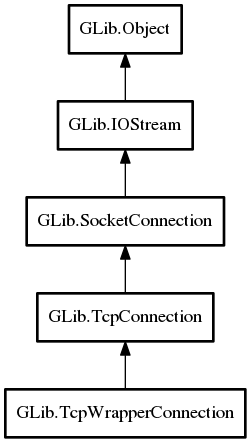

TcpWrapperConnection
Object Hierarchy:
Description:
A TcpWrapperConnection can be used to wrap a IOStream that is based on a Socket, but which is not actually a SocketConnection.
This is used by SocketClient so that it can always return a SocketConnection, even when the connection it has actually created is not directly a SocketConnection.
Namespace: GLib
Package: gio-2.0
Content:
Properties:
Creation methods:
Methods:
Inherited Members:
All known members inherited from class GLib.TcpConnection

All known members inherited from class GLib.SocketConnection
All known members inherited from class GLib.IOStream
All known members inherited from class GLib.Object